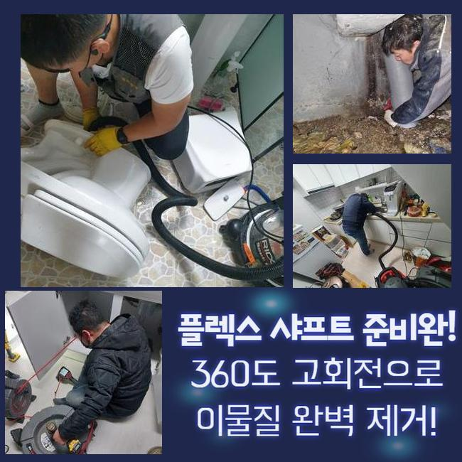
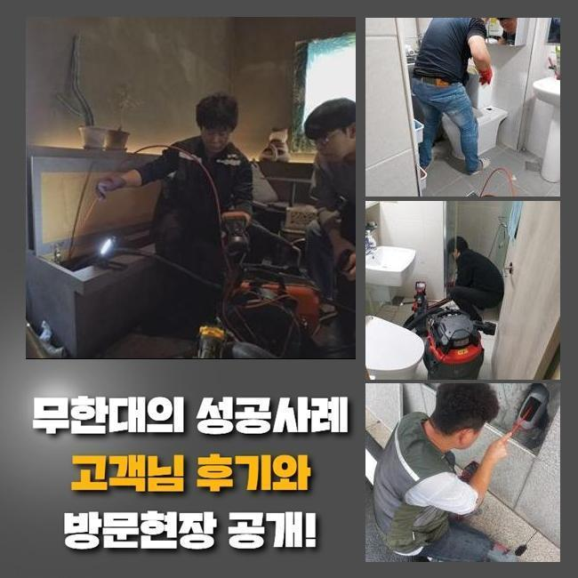
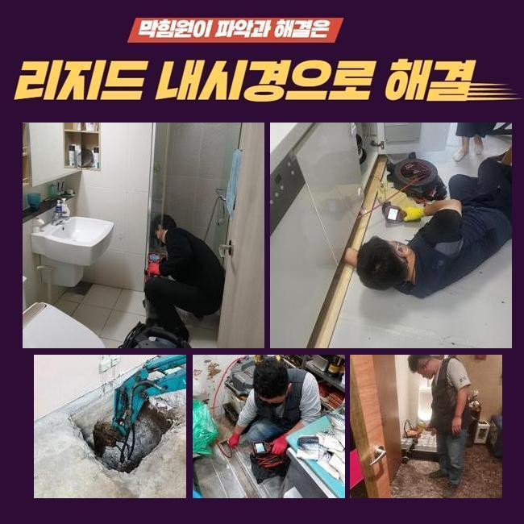
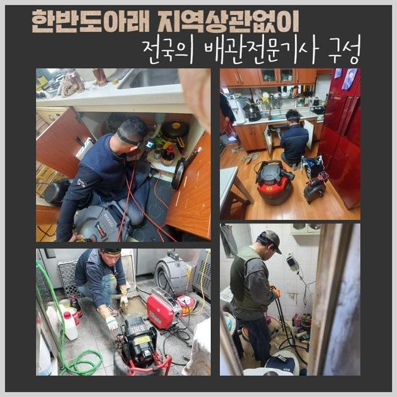
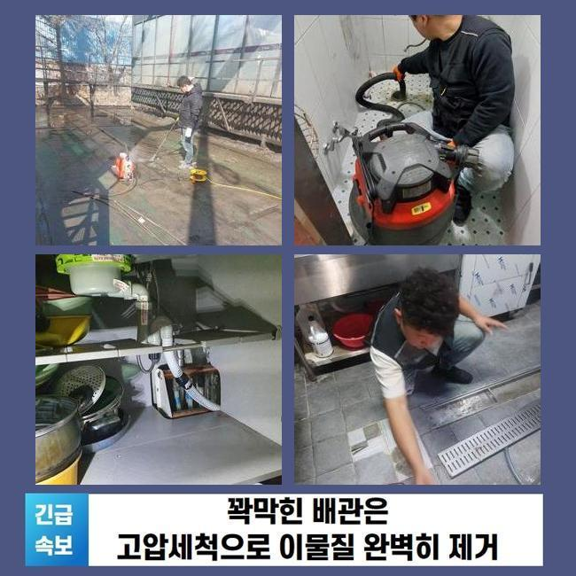
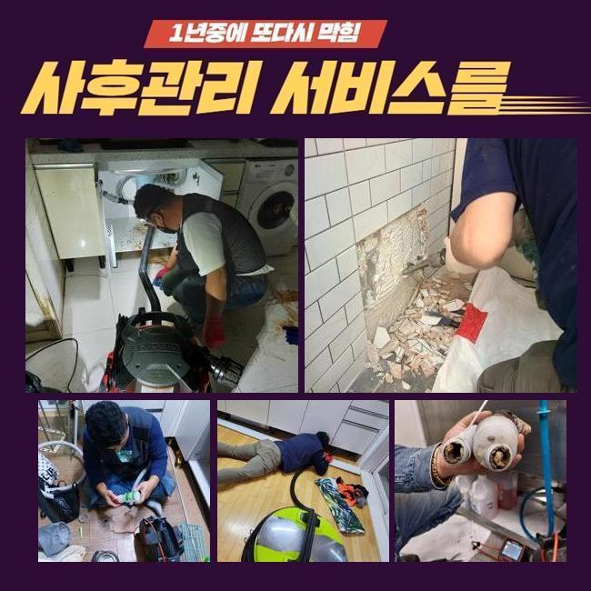

🏠 종로 신영동오수관역류 내자동 하수구청소 수리업체
용인 싱크대막힘 전문 시공 후기

📋 작업 개요
- 위치: 용인
- 서비스 유형: 싱크대막힘, 하수구막힘, 배관막힘, 누수수리, 역류해결, 배관청소
- 작업 일시: 2025. 4. 9. 4:49
- 업체명: 하수구수사대 (010-5615-2118)
🔍 문제 상황
조속히 배출되던 물들이 대뜸 답답하게 빠지는 경우들이 존재합니다
단기간 동안에만 생겨난것이겠지 여기실 수 있으시겠지만 이것이 시작일 가능성들이 다분해요 이상증세들이 생겼나다고 하여 곧이어 결함들이 생기지-는 않아요
종로 신영동오수관역류 내자동 하수구청소 수리업체
그렇지만 합리적인 대응은 증상들이 가벼울 때 결함을 시정해주는것입니다
위험을 동반한 해결책을 통한다거나 염기성 용액으로 대표되는 화학품을 남용한다면 되레 바닥관로의 컨디션이 커져간다는걸 기억하고 계셔야하는데요
또한 하부장 하단부에서 하수가 새어버리는 현상이 발생되면 헤매시는 고객분들이 더러 계시죠
누수와 연관된 결함들은 이런저런 원인들이 존재할 수 있기에 별거 아니라고 보시면 안됩니다
하수도의 오류일 수 있고 배수구가 막히면서 물이 솟아오르게된건지는 봐야알죠
최근에 저희업체에게 문의하셨던 고객님께서도 하수가 새어버리는 현상이 발생되며 씽크대 이용을 멈춰야만했던 문제들이었어요
우선은 수도가 하단부터 새게 되면 누수의 전조라고 의심하셔야해요
허나 오염성과 관로에서 빠지게된 양상을 면밀히 살핀다면 다른 점이 있는데요

🔎 원인 분석
💡 전문가 진단: 정밀 진단 장비를 사용하여 슬러지의 고착 여부를 판명하고 타격/세척 작업을 실시했습니다.
개수대가 정체되며 이런 증상들이 생겨난것이면 하부장쪽에서 새는 사례가 상당하고 잔해들도 동반하기때문에 냄새들이 생겨나게됩니다
혹시라도 하부장 하단부에서 물샘이 야기되었다면 가볍게 판단하여 락스같은 용품들을 남발하기 전에 전문인력으로부터 현 원인들을 진단받는게 좋습니다
저희업체가 곧장 방문드려 검진을 수행하니 씽크대에서 악취가 불거진것이 확인되었습니다
이런 악취들이 올라오게되는 이유라 함은 깊은 곳에서 흡착물들이 부패단계를 맞닥뜨려서인데요
하수들이 통수가 안되며 하수관에서 상해간다면 악취들은 심각해지겠죠?
더 나아가 막힘이 심한 경우라면 배수관의 압이 바깥으로 향하기때문에 조금씩 밖으로 역류하게됩니다
그렇기에 싱크대 누수등이 목격되었을 땐 다양한 까닭을 총체적으로 찾아나서야 해요
첫번째로 어떤 위치에까지 결함들이 생긴 건지 세심히 진단해야했기에 하부장 쪽을 연 뒤 안쪽부터 체크했는데요
배수구 아래로는 전부 누수들과 관련있는 상황이였습니다
그러니 이렇게 바닥으로 새게되는 속력이 빨랐던 것이죠
그렇지만 해결해야했던 것은 내측에 누적되어있던 이물인지라 정확한 현 상황에 대해 서둘러 검수해보고 해당 구간을 시정해줘야하죠
일반적으로 싱크대 쪽에서 야기되는 이런 증상들은 기름기로 발생되는 경우들이 대다수에요

🔧 작업 과정
평소의 잔해물들과 비교하여 기름들이 덩어리진 모습이라 점성까지 상당하고 뭉친다면 공간들을 많이 차지하는 현상들이 많습니다
반대로 고객차원에선 문제들을 벗어날 생각으로 펑크린과 같은것을 무분별하게 쓴다면
하수도에 자리했던 슬러지형태의 잔해와 만나 막힘증세가 수렁으로 빠지게되죠
씽크볼과 연결된 자바라를 체크하니 오염도가 좋은 상태가 아니였고 안쪽엔 잔해들이 가득했던 상황이였습니다
여지껏 때때로 씽크대쪽을 청소하지 않았으므로 여러스팟에서 증세들이 나타난 상태였어요
의뢰인분에게도 작업 중에 주름호스들도 새로이 바꿔주는게 좋을거란 설명까지 전해드렸어요
주름호스를 해체해주고 지저분한 잔해물은 석션장치로 첫번째로 흡입하여 제거해줬습니다
입구부분에 고인 이물도 청소해줘야해서 오염된 지점은 전부 청소해주었습니다
종종 석션기기의 작업들로 문제들이 복구되는 경우들도 있습니다
그렇지만 오늘의 현장에서는 심각수준이였던지라 내시경장비들로 자세한 현 원인들을 체크해야했습니다
반대로 결함이 비슷하다고 할지라도 구조자체가 작업할 때 원활한 상태가 아니면 예상시간에서 추가되어 소요될 수 밖에없는 사례들도 존재하는데요
가령 수직라인이 많다라고 한다면 내시경들을 하수관으로 넣는것도 어려워요
그럼에도 불구하고 다행히 금일의 장소에선 그 정도의 상황은 아닌 까닭에 서둘러 내시경장치를 심층부까지 넣어주었어요
내시경으로 상태에 대하여 여기저기 관찰하니 하수구 내측엔 기름들이 흡착된 상태였는데요
기름들은 시간자체가 지나면 굳고 벽부분에 고착되는 현상이 빈번하여 간단한 장치를 가지고서는 개선시키기가 어렵습니다
곧장 세정제 등으로는 효과자체가 무의미하다고 설명드리는것이에요
그러므로 샤프트도구를 준비하고 하수관의 심부에까지 케이블을 진입하기 시작했답니다
심부에까지 접근해주고 청소과정을 수행하기 위해서입니다


✅ 작업 완료
샤프트장치는 체인들을 기름들이 자리잡은 위치들에 넣어주고 조각으로 분쇄시키는 방식들로 진행되고 있죠
떨궈진 잔재들은 석션도구를 이용하여 바깥부분으로 빼줍니다
하수들이 정체된 스팟들을 청소하고 주름관로와 통들도 새 개체로 바꿔서 연결시켜드렸어요
하물며 마지막으로 배수가 잘되는지 통수 테스트를 해보니, 이상징후없이 조속히 흘러나가는 모습을 목격했어요
배수통들과 주름호스들도 깔끔하게 마감되면서 전체적으로 마무리했습니다




⚠️ 베란다 누수 및 방수 관리 방법
- ✅ 비가 많이 올 때 창틀 주변이나 아래층 천장에 얼룩이 생기는지 정기적으로 확인해 보세요.
- ✅ 우수관 주변 실리콘 마감이 들뜨거나 깨진 틈새가 있는지 손상 여부를 수시로 체크하세요.
- ✅ 베란다 바닥 타일의 줄눈(메지)이 소실되면 그 틈으로 물이 침투하여 누수가 유발됩니다.
- ✅ 누수 의심 증상 발견 시 방치하면 아래층 손실이 커지므로 즉시 전문가의 진단을 받으십시오.
💡 핵심 정리
- 확실한 장비 작업(내시경 점검 및 샤프트 스케일링)으로 원인을 뿌리 뽑습니다.
- 작업 후 1년 이내에 동일한 부위 재발 시 100% 무상 A/S 서비스를 보장합니다.
- 서울 · 경기 · 인천 전 지역에 24시간 언제든 긴급 출동할 수 있도록 항시 대기 중입니다.
❓ 자주 묻는 질문 (FAQ)
🚨 용인 싱크대막힘 문제로 고민이신가요?
정확한 원인 진단과 확실한 시공으로 재발 없는 해결을 약속드립니다.
24시간 긴급 출동 | 서울 · 경기 · 인천 전지역 | 1년 내 재발 시 무상 A/S